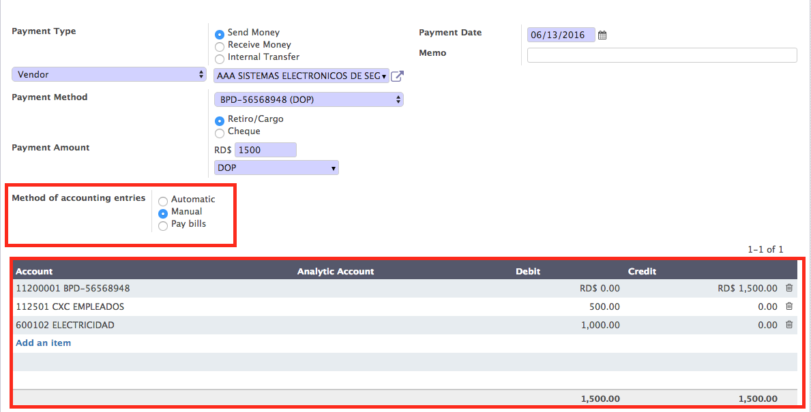
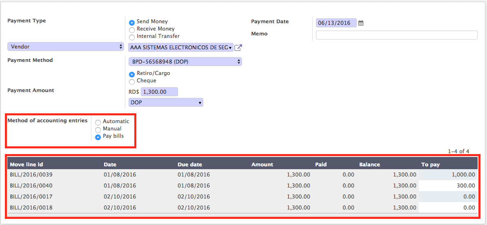

Codifique manualmente sus entradas contables.
El método en el campo de las entradas contables selecciona Manual y realiza sus entradas contables libremente.

Aplicar manualmente sus pagos a facturas parciales o completos.
El método en el campo de las entradas contables selecciona pagar facturas y realizar pagos libremente o parcial.
